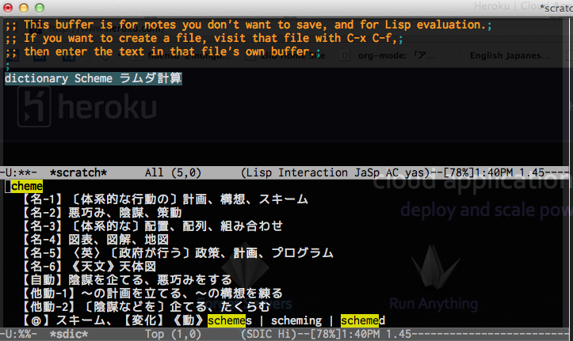

Emacsメモ
Table of Contents
- 1 興味深い資料
- 2 EmacsからAOJへのサブミット
- 3 Emacsで複数のShellを開く方法 http://at-aka.blogspot.jp/2006/07/emacs-subshell.html
- 4 EmacsでJavaの開発環境を整える
- 5 Emacsで英和辞典
- 6 Emacs+英辞郎+sdicで快適な環境づくり
- 7 org-modeのこと
- 8 expand-resion
- 9 sense-expand-resion
- 10 括弧の入力補助
- 11 Emacsで英語翻訳機能を
- 12 twittering-mode導入
- 13 C++の補完
- 14 チップス
- 15 対話Shellの使い方
- 16 Links
- 17 w3m-emacsの導入
1 興味深い資料
- Emacsy: An Embeddable Emacs-like Library http://www.kickstarter.com/projects/568774734/emacsy-an-embeddable-emacs
2 EmacsからAOJへのサブミット
3 Emacsで複数のShellを開く方法 http://at-aka.blogspot.jp/2006/07/emacs-subshell.html
4 EmacsでJavaの開発環境を整える
- 普通はEclipseを使うが，書き捨てのコードをパパっとJavaで書きたいとき
- RubyとかSchemeとか付けばええやん
- 静的型付け言語だし？
- C++は？
- めんどい
- C++は？
- 静的型付け言語だし？
- https://github.com/espenhw/malabar-mode
- ここを変える
https://github.com/espenhw/malabar-mode/issues/74
<maven.version>3.0.4-SNAPSHOT</maven.version>
http://d.hatena.ne.jp/smotokezuru/20100418/1271565315
- オプションはつけなくてもイケるかも
-Dmaven.test.skip=true
- オプションはつけなくてもイケるかも
-
(add-to-list 'load-path "~/.emacs.d/elisp/malabar-1.5-SNAPSHOT/lisp/") (require 'cedet) ;; (semantic-load-enable-minimum-features) ;; or enable more if you wish (setq semantic-default-submodes '(global-semantic-idle-scheduler-mode global-semanticdb-minor-mode global-semantic-idle-summary-mode global-semantic-mru-bookmark-mode)) (semantic-mode 1) (require 'malabar-mode) (setq malabar-groovy-lib-dir "/path/to/malabar/lib") (add-to-list 'auto-mode-alist '("\\.java\\'" . malabar-mode))
- ここを変える
https://github.com/espenhw/malabar-mode/issues/74
- RubyとかSchemeとか付けばええやん
5 Emacsで英和辞典
;; 辞書.app ;; http://d.hatena.ne.jp/tomoya/20091218/1261138091 (defvar dict-bin "/Users/katagiri/srcs/commandline-dictionary-app/src/dict" "dict 実行ファイルのパス") (defun temp-cancel-read-only (function &optional jaspace-off) "eval temporarily cancel buffer-read-only &optional t is turn of jaspace-mode" (let ((read-only-p nil) (jaspace-mode-p nil)) (when jaspace-off (when jaspace-mode (jaspace-mode) (setq jaspace-mode-p t))) (when buffer-read-only (toggle-read-only) (setq read-only-p t)) (eval function) (when read-only-p (toggle-read-only)) (when jaspace-mode-p (jaspace-mode)))) (defun ns-popup-dictionary () "マウスカーソルの単語を Mac の辞書でひく" (interactive) (let ((word (substring-no-properties (thing-at-point 'word))) (old-buf (current-buffer)) (dict-buf (get-buffer-create "*dictionary.app*")) (dict)) (when (and mark-active transient-mark-mode) (setq word (buffer-substring-no-properties (region-beginning) (region-end)))) (set-buffer dict-buf) (erase-buffer) (call-process dict-bin nil "*dictionary.app*" t word "Japanese-English" "Japanese" "Japanese Synonyms") (setq dict (buffer-string)) (set-buffer old-buf) (when (not (eq (length dict) 0)) (temp-cancel-read-only '(popup-tip dict :margin t :scroll-bar t) t) ;; (temp-cancel-read-only '(popup-tip dict :margin t :scroll-bar t)) ))) (defvar dict-timer nil) (defvar dict-delay 0.1) ;; (defvar dict-delay 5.0) (defun dict-timer () (when (and (not (minibufferp)) (and mark-active transient-mark-mode)) (ns-popup-dictionary))) (setq dict-timer (run-with-idle-timer dict-delay dict-delay 'dict-timer))
6 Emacs+英辞郎+sdicで快適な環境づくり
- 参考URL: http://d.hatena.ne.jp/kyagi/20090515/1242379726 http://d.hatena.ne.jp/higepon/20090125/1232872431 http://nox-insomniae.ddo.jp/insomnia/2009/01/eijiro-emacs.html
# -*- coding: utf-8 -*- def make_key(key) head = key.clone key.tr!('A-Z', 'a-z') key.sub!(/\s+/, ' ') # key.sub!(/ \+\d+/, '') ret = "" if head != key ret = "<H>#{head}</H>" end ret + "<K>#{key}</K>" end $stdin.each do |line| line.gsub!('&', '&') line.gsub!('<', '<') line.gsub!('>', '>') line.gsub!(' \ ', '&lf; ') key, content = line.split(' /// ') puts make_key(key) + content.chomp end
% cat Eijiro128.txt Ryaku28.txt| nkf -w8| ruby gene.rb > eijirou.sdic % cat Waei128.txt| nkf -w8| ruby gene.rb > waeijirou.sdic % ls /usr/local/share/dict # ディレクトリがなかったら % mkdir /usr/local/share/dict % (sudo) cp eijirou.sdic waeijirou.sdic /usr/local/share/dict
;; 英辞郎 - 辞書 http://d.hatena.ne.jp/higepon/20090125/1232872431 (autoload 'sdic-describe-word "sdic" "英単語の意味を調べる" t nil) (global-set-key "\C-cw" 'sdic-describe-word) (autoload 'sdic-describe-word-at-point "sdic" "カーソルの位置の英単語の意味を調べる" t nil) (global-set-key "\C-cW" 'sdic-describe-word-at-point) (setq sdic-eiwa-dictionary-list '((sdicf-client "/usr/local/share/dict/eijirou.sdic"))) (setq sdic-waei-dictionary-list '((sdicf-client "/usr/local/share/dict/waeijirou.sdic"))) (setq sdic-default-coding-system 'utf-8-unix) ; 検索結果表示バッファで引いた単語をハイライト表示する http://d.hatena.ne.jp/kyagi/20090515/1242379726 (defadvice sdic-search-eiwa-dictionary (after highlight-phrase (arg)) (highlight-phrase arg "hi-yellow")) (defadvice sdic-search-waei-dictionary (after highlight-phrase (arg)) (highlight-phrase arg "hi-yellow")) (ad-activate 'sdic-search-eiwa-dictionary) (ad-activate 'sdic-search-waei-dictionary)
7 org-modeのこと
- リファレンス http://www.network-theory.co.uk/docs/orgmode/PublishersPreface.html
- 日本語のマニュアル http://hpcgi1.nifty.com/spen/index.cgi?OrgMode/Manual
- 太字
*bold* ;; 前後に半角スペースが必要
8 expand-resion
9 sense-expand-resion
10 括弧の入力補助
- Link
- 括弧の自動挿入の挙動をオレオレ設定できるflex-autopair.elで夢を叶える
(auto-install-from-url "https://raw.github.com/uk-ar/flex-autopair/master/flex-autopair.el")
下記を設定ファイルに追加
(require 'flex-autopair) (flex-autopair-mode 1)
11 Emacsで英語翻訳機能を
http://d.hatena.ne.jp/khiker/20070503/emacs_text_translator
(auto-install-from-emacswiki "text-translator-vars.el") (auto-install-from-emacswiki "text-translator-load.el") (auto-install-from-emacswiki "text-translator.el")
(require 'text-translator) (global-set-key "\C-x\M-t" 'text-translator) (global-set-key "\C-x\M-T" 'text-translator-translate-last-string) ;; プリフィックスキーを変更する場合. ;; (setq text-translator-prefix-key "\M-n") ;; 自動選択に使用する関数を設定 (setq text-translator-auto-selection-func 'text-translator-translate-by-auto-selection-enja) ;; グローバルキーを設定 (global-set-key "\C-xt" 'text-translator-translate-by-auto-selection)
12 twittering-mode導入
14 チップス
「C-h f 関数名」で関数名で指定した関数の詳細を表示．
14.1 別フレームを作る
make-frameという関数(delete-frameもある)
14.2 フレーム間の移動
http://2kr.blog87.fc2.com/blog-entry-437.html
●ウィンドウ操作 C-x 2 ウィンドウを上下２分割 C-x 3 ウィンドウを左右２分割 C-x 0(ゼロ) 現在キャレットがいるウィンドウを閉じる C-x o(オー) ウィンドウ間移動 ●フレーム操作 C-x 5 2 新規フレームを開く C-x 5 0（ゼロ） フレームを閉じる C-x 5 o(オー) フレーム間移動
15 対話Shellの使い方
16 Links
Emacs Lisp の文字列操作まとめ http://emacs.g.hatena.ne.jp/kiwanami/20110809/1312877192
17 w3m-emacsの導入
17.1 動かない．．．
17.2 導入方法
以下のURLの安定版をダウンロードする http://emacs-w3m.namazu.org/index-ja.html#download
% wget http://emacs-w3m.namazu.org/emacs-w3m-1.4.4.tar.gz
そのままではemacs23に対応していないため，以下の操作を行い最新版をダウンロード
% cvs -d :pserver:anonymous@cvs.namazu.org:/storage/cvsroot login CVS password: # パスワードは設定されていません．単に Enter/Return キーを押して下さい． % cvs -d :pserver:anonymous@cvs.namazu.org:/storage/cvsroot co emacs-w3m-csv
安定版のtarを解凍し，最新版のディレクトリをその中に上書き
% tar xvzf emacs-w3m-1.4.4.tar.gz % cp -r emacs-w3m-csv/* emacs-w3m-1.4.4
% mv emacs-w3m-1.4.4 emacs-w3m % cd emacs-w3m % ./configure --prefix=なんとか % make
そして，emacs-w3mのディレクトリにパスを通せばおｋ